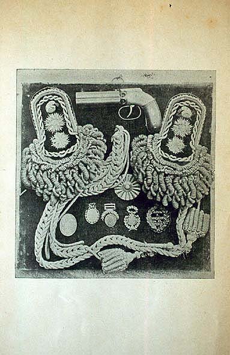

|
|  |
|
Adolfo P. Carranza, Noticia sobre la vida y los servicios del Coronel Juan Isidro Quesada
|
The museum was also committed to commemorate minor combattants of independence such as Quesada's own ancestor Juan Isidro who had fought with San Martín in the Andean campaign. Whilst a project for a 'national pantheon' comprising the human remains of the 'fathers of the nation' failed to materialise in spite of public suscriptions having been organised in 1889 to raise funding, and a 'selecting committe' having been set up consisting, among others, of ex-presidents Mitre and Roca, both the National Historical Museum and the Revista Nacional (whose editors and contributors had been the driving force of the Museum's foundation) aimed to create at least a visual gallery of images and objects and their 'labels' instructing the populace in the cult of their (or rather, their ruling class's) ancestors. In the Revista, commemorations of birthdays and deaths regularly filled the columns of the sections 'Muertos ilustres', 'Grandes ciudadanos' and even 'Próceres olvidados'. 'Mientras enterramos a los últimos veteranos de la Independencia –Adolfo P. Carranza, the Revista's editor wrote in 1889, the year he left the journal to become director of the National Historical Museum– se acercan los cien años del nacimiento de otros varones ilustres, de otros guerreros (...) Es decir, nos despedimos con amargura de los que se van y saludamos con alborozo las fechas clásicas de los que se fueron.' ('Centenario de Mansilla', Revista Nacional 8, 1889)
|